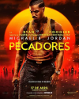

Bem-vindo ao Portal Cultura Pop
Aqui estão as reviews em alta

Fernanda Nascimento
Sinners
"Eu achei o filme inovador, traz temas cliches e saturados e trazem novas perpectivas com uma repaginaçao dentro desses temas. Eu amo!"
Gabriel Maranhão
Lalaland
"O melhor filme de terror de todos os tempos."
Pedro Andrade
Twin Peaks: Fire Walk with Me
"FIlme muito bom, te faz pensar sobre suas relações familiares, parasociais, psicologicas e metafisicas"
Kelpo
Silent Voice
"Muito bom!"
Gmac
Anora
"Insuportavel! Filme de gente não situada!"
Henrique Al-Salab
Bee Movie
"Lindo filme contra o capitalismo."
Matheus
Mother
"Filme horrivel em tudo que se propõe."
Giovana Maria
Minions: The Rise of Gru
"É o melhor filme que eu já vi na minha vida"